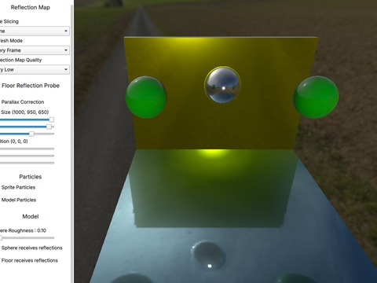
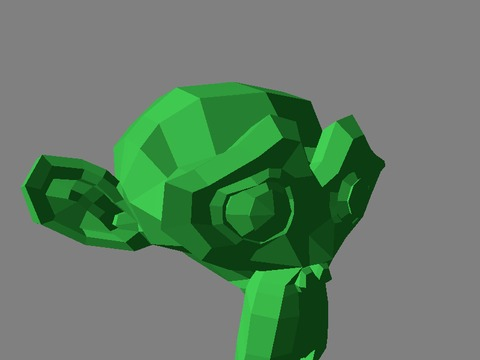
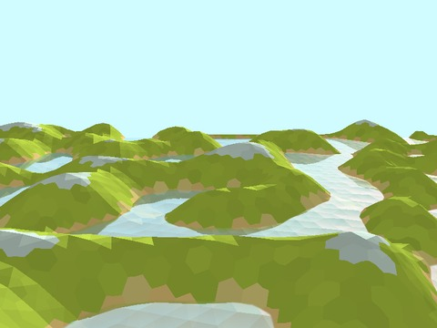
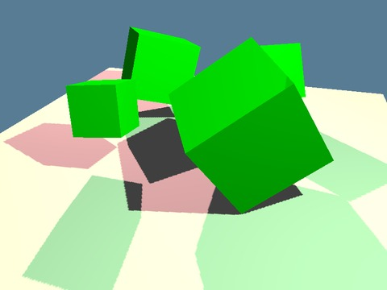
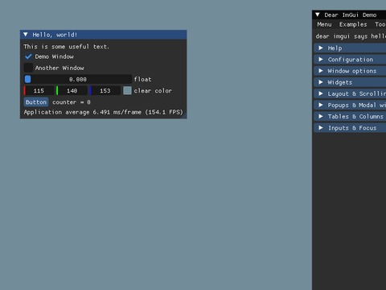
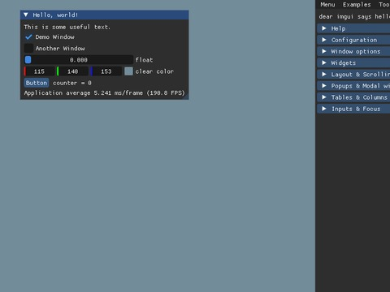
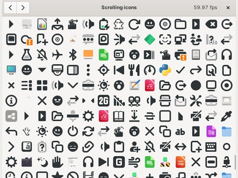
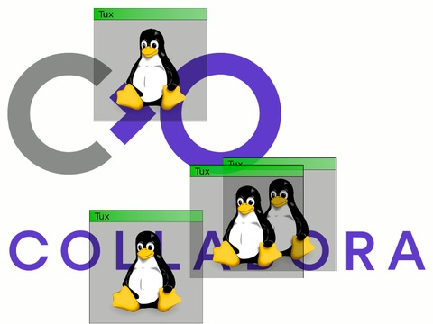
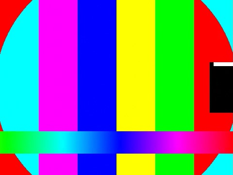

Study 1: 32 programs, checker frozen before its first run


Qt Quick 3D 14 programs · Qt 6.4.2
frozen
8% 88 / 12 / 1,026
observed
88% 88 / 12 / 0
release
8% 88 / 10 / 1,026 / 2u
3 true causes
↑acquire semaphore reused
↑present semaphore reused
●texture visible to the vertex stage only, sampled by the fragment stage
false alarms: host writes into per-frame slots smaller than a page (conservative capture)


wgpu 15 examples
frozen
0% 0 / 0 / 945
observed
0% 0 / 0 / 906
release
no report
00 true causes
false alarms: three checker defects, fixed after the study; the release reports nothing


Dear ImGui 2 programs · 9d9a621f
frozen
100% 40 / 0 / 0
observed
100% 40 / 0 / 0
release
100% 40 / 0 / 0
1 true cause
●swapchain images transitioned before they are acquired
vkcube 1 program · 1.3.275
frozen
100% 2 / 0 / 0
observed
100% 2 / 0 / 0
release
100% 2 / 0 / 0
1 true cause
↑present semaphore reused
Study 2: 25 programs, a later checker frozen before its first run


GTK 4 8 + 1 programs · 4.14.5
frozen
14% 173 / 0 / 1,048 / 13u
observed
14% 173 / 0 / 1,048 / 13u
release
92% 173 / 1 / 6 / 8u
3 true causes
↑rendering never waits for the acquire semaphore
↑present waits for acquire, never for rendering
↑acquire semaphore re-signalled while a present may wait
false alarms: all of a frame's images in one descriptor array (frozen); atlas rectangles (6, release)


vkmark 7 scenes · ab6e6f3
frozen
100% 38 / 0 / 0
observed
100% 38 / 0 / 0
release
100% 38 / 0 / 0
5 true causes
↑host rewrites the uniform buffer in flight
↑acquire semaphore reused
●present semaphore reused
●clear barrier does not chain to the acquire wait
●depth image shared across frames, colour-only dependency


mpv / libplacebo 4 configurations · 0.37 / 6.338
frozen
100% 16 / 0 / 0
observed
100% 16 / 0 / 0
release
100% 16 / 0 / 0
1 true cause
↑barrier does not chain to an external semaphore wait
frozen: timestamp queries unmodelled (no memory effect), outside the premises
GStreamer 5 pipelines · 1.24.2
frozen
100% 33 / 0 / 0
observed
100% 33 / 0 / 0
release
100% 33 / 0 / 0
2 true causes
●acquire wait at BOTTOM_OF_PIPE blocks nothing
●sampled image visible to input-attachment reads only
truetechnicalityunresolvedfalse alarmfrozen: the fresh result (conservative capture, the theorem's configuration) · observed: same checker, observed capture · release: post-hoc, same traces · counts: true / technicality / false alarm (/ unresolved)↑ changed upstream before the study ● still present upstream
Fig. (preview)